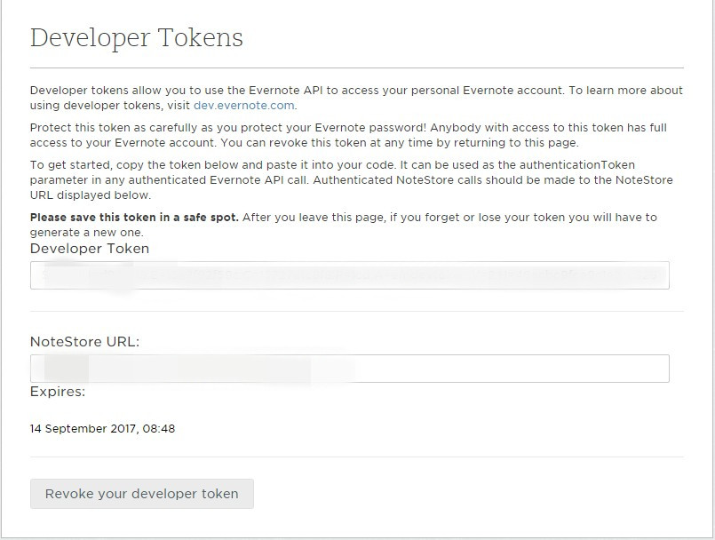
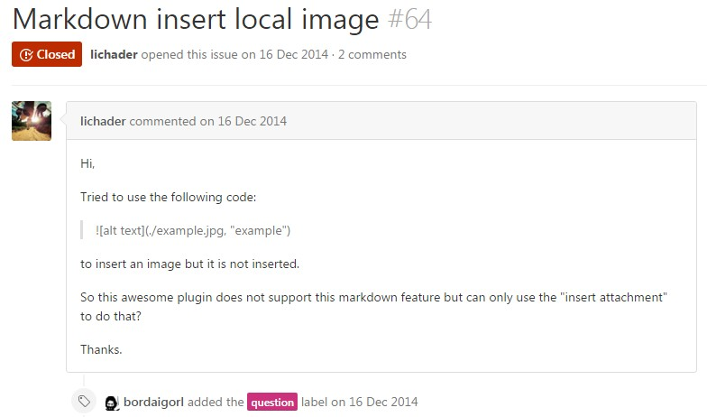

用过Evernote的人知道，其本身的编辑器简直惨不忍睹，对于我这种需要进行富文本写作和漂亮的排版之人来说，简直是叔叔能忍，婶婶不能忍……可我又确实中意它……，肿么办？
我是个爱折腾的人，而且喜欢使用markdown进行写作，所以我决定折腾一下，用markdown来编辑Evernote！！！
下面是我捣鼓的过程……
首先，作为一个中国人，我当然要去问度娘了……不出意料，网上已经有一些关于使用markdown编辑Evernote的资料了，看了简书、知乎和一些博客作者的做法，主要有以下两种：
使用马克飞象，这是一个收费软件，口号是专为Evernote打造的markdown编辑器，有一段时间的试用期，我试验了下，确实挺好用的……而且简单粗暴，只要绑定你的Evernote账号即可本地编辑并同步到Evernote。
使用sublime text3来编辑Evernote，但这需要你自行安装相应插件并进行一些配置。虽然sublimetext3是收费软件，但它可以永久试用，只是会不时弹出一个对话框询问你是否愿意购买，但不用担心，这个弹出框的间隔时间很长，并不影响我们的使用，当然，如果你有强迫症……(∩_∩)
作为一个重度sublime text3编辑器使用者，我当然毫不犹豫的选择折腾它了……<(￣︶￣)>，具体过程如下：
你要安装Evernote插件，具体方法不再赘述，可自行百之谷之……这款插件可以让你在本地使用markdown写作，然后同步到你的Evernote账户，还可以在本地打开你的笔记，还有其他诸如更新，删除等等功能。当然，如果你使用的是桌面Evernote，你还需要同步到本地，才能看到你的笔记。
去Evernote网站获取应用授权
https://app.yinxiang.com/api/DeveloperToken.action
将获得的Developer Token和NoteStore URL写入配置文件
Preferences>>Package Settings>>Evernote>>Settings User1234{"noteStoreUrl": "你的 NoteStore URL","token": "你的 Developer Token"}
此时你就可以在sublime text3的命令模式中输入Evernote查看该插件的相关命令了
但是到这里还没完哦……
接着安装Sublime Tmpl插件
配置markdown模板
通过Preferences>>Browser Packages打开SublimeTmpl文件夹中的templates文件夹，添加一个md.tmpl文件，用ST3打开，在其中加入：12345---title:tags:notebook:---
注意：Evernote插件目前只能识别title、tags、notebook这三个关键字，依次是文章标题，标签，所属笔记本。
然后用sublime text3打开
SublimeTmpl文件夹中的Main.sublime-menu文件，照猫画虎的加入如下内容：1234567{"caption": "md","command": "sublime_tmpl","args": {"type": "md"}}
现在，打开命令面板，输入Evernote,选择New empty note就可以以该模板创建一篇新的空笔记。你需要在添加文章的title、tags、notebook。
若是你觉得使用命令模式比较麻烦，你也可以在
Preferences>>Key Bindings-User里自行配置一些快捷键
For Evernote:
|
|
For md模板：
|
|
附：Evernote命令及含义
Evernote: Send to EvernoteEvernote: Open Evernote Note直接在sublime text浏览并打开Evernote各个笔记本下的笔记，所有内容会自动以Markdown格式打开，其他文本格式，图片等附件均会被消除。Evernote: Search Note笔记搜索功能，可以参考大象官方Developer文档编辑自己的关键词语法。Evernote: Update Evernote Note笔记编辑Evernote: Attach current file to a note可将当前打开的文件嵌入正在编辑的笔记中Evernote: Clip to Evernote as a new note将剪切板的内容直接作为新笔记创建出来Evernote: View note in WebApp将当前笔记转入Evernote网页版打开
附：个性化配置
我们可以利用Evernote插件进行更深入的个性化配置工作（
Preferences>>Package Settings>>Evernote），比如：
md_syntax: 定义md语法inline_css: 定义部分css元素样式，包括：pre, code, h1, hr, blockquote，supcode_highlighting_style: 提供了丰富的代码高亮样式，可定义的包括：autumn, default, github, monokai, perldoc, vim, borland, emacs, igor, murphy, rrt, vs, bw, friendly, native, tango, xcode, colorful, fruity, manni, pastie, tracevernote_autocomplete: 开启此项，后续所有笔记在加载时会自动补全笔记所属笔记本和标签notes_order: 使用以下条件对笔记进行排序：created, updated, relevance, update_sequence_number, title，或者通过‘notes_order_ascending’来对顺序进行颠倒
好了，上面我们利用ST3 + Evernote插件搭好了用markdown编辑Evernote的写作环境，可是还有一些小问题啊……
首先，一个很重要的问题就是我无法插入本地图片然后同步到Evernote，这是绝逼不能忍的啊，所以继续问度娘，嘿嘿…… <(＾－＾)>
可是看了不少度娘给的结果，比如简书，知乎，各种博客等等，居然没有我想要的答案…… ( ˇˍˇ )
无奈，只好上ST3的package control官网上瞧一瞧，结果看到了Evernote插件的介绍页上说，有问题就去看issues，虽然不知道这是个什么东东，但我还是抱着一丝希望点了进去，因为我要找与图片插入相关的信息嘛，很自然的，我输入了image进行搜索，然后选择issues的结果，居然真有我要的答案……(⊙▽⊙)

这里告诉了我们插入图片有两种方法：
使用网络图片，你可以使用标准的markdown语法
，只需给出图片的URL即可，但有一个问题，如果网络上的图片资源没有了，或者URL变了，那我们就也就无法引用它了。使用本地图片，如果你要插入本地图片，是不能使用markdown的，因为你会使用一个固定的本地路径，但是你用markdown写的笔记会被先转换为html然后发送到你的Evernote账户，这样你的图片URL就失效了。解决方法就是使用附件的形式，通过Evernote插件命令，在你希望插入图片的地方，选择
Insert Attachment Here，然后输入图片的本地路径，此时会生成一个<en-media type="image/jpeg" hash="……"/>类似标签，就代表你要插入的图片。
当然，issues里还有更多的关于插入图片的讨论，可自行前往查看……